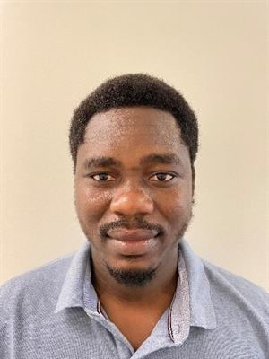

About MeI am currently a Ph.D. candidate at the University of Delaware in the Department of Mathematical Sciences. The primary focus of my research is to find out what role Hox genes play in colorectal cancer (CRC) by using mathematical modeling and network analysis. My work has the potential to significantly advance cancer research and help those who are affected by CRC.